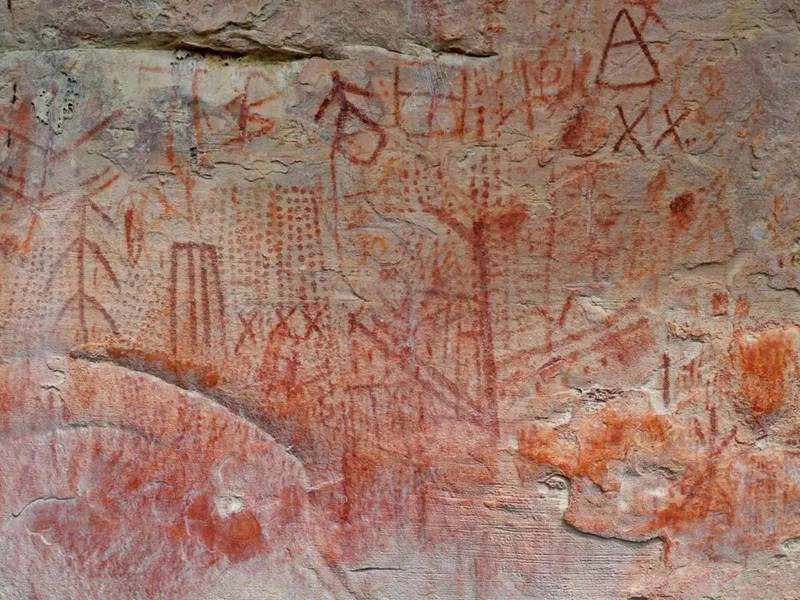
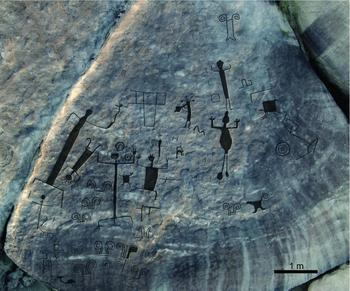
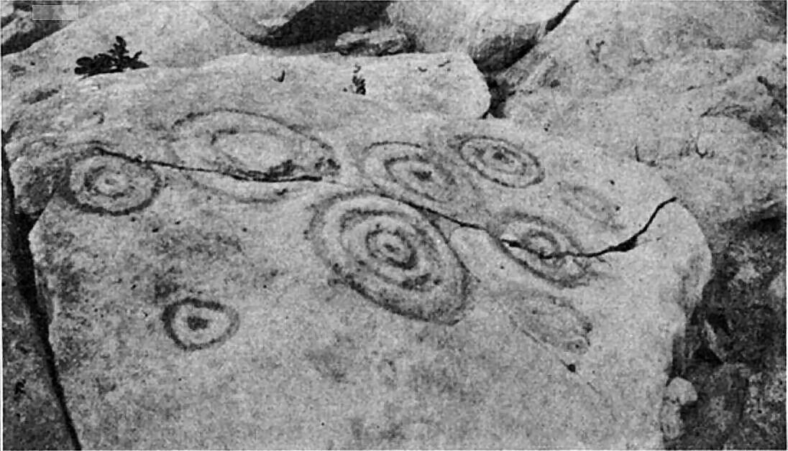
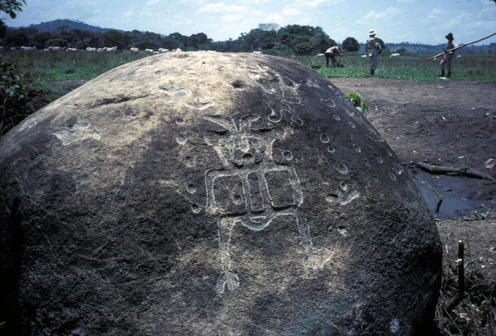

VENEZUELA'S ARCHAEOLOGICAL SITES
CANAIMA NATIONAL PARK ROCK ART

Deep within Canaima National Park, archaeologists have discovered 20 rock art sites estimated to be around 4,000 years old, potentially representing a previously unknown ancient culture. Led by researcher José Miguel Pérez-Gómez of Simón Bolívar University, the team uncovered both pictograms — painted in red and featuring dotted lines, rows of X's, star-shaped patterns, and stick figures — and incised petroglyphs showing similar geometric motifs. Pottery fragments and stone tools found at the sites suggest these were active gathering places for the people who created them. The park may have been the cultural ground zero from which this mysterious tradition spread as far as the Amazon, the Guianas, and southern Colombia.
ATURES RAPIDS — ORINOCO PETROGLYPHS

The Atures Rapids in Amazonas State contain some of the most monumental rock art in the entire world, with eight groups of carved panels spread across five Orinoco River islands. The most famous feature is the nearly 100-foot-tall serpent at Cerro Pintado — a staggering carving that has been known to the archaeological community for centuries. One panel alone spans 3,200 square feet and contains 93 engravings. Recently mapped in unprecedented detail using drone photogrammetry, these 2,000-year-old carvings show striking similarities to rock art found in Brazil and Colombia, suggesting the Atures Rapids functioned as a major ethnic, linguistic, and cultural convergence zone for ancient South American peoples.
QUEBRADA SECA PETROGLYPHS — MONAGAS

Discovered in early 2026 in the highland community of Quebrada Seca in Monagas state, this petroglyph complex has been estimated at between 4,000 and 8,000 years old — potentially making it one of the oldest known examples of symbolic rock art in eastern Venezuela. Located at 647 meters above sea level, the site features a remarkable array of spirals, concentric circles, and anthropomorphic humanoid figures carved with notable precision. The Cedeño municipality, already known locally as the "petroglyph capital" of Monagas, now holds one of the most significant newly documented archaeological records in the country.
EL GAVÁN — BARINAS CHIEFDOM

El Gaván in the state of Barinas is the first-order center of a remarkably sophisticated pre-Columbian chiefdom that flourished from as early as the 6th century CE. Excavated by archaeologists Charles Spencer and Elsa Redmond as part of the Barinas Project, the site reveals a complex society with defensive earthwork causeways, evidence of large-scale conflict, and a thriving long-distance trade network. Exotic artifacts and polished stones found at El Gaván originate from the Venezuelan Andes and even farther regions, suggesting major trade routes that were themselves marked by petroglyphs in the piedmont valleys.